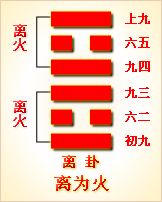

周易第三十卦 离 离为火 离上离下
离：利贞，亨。畜牝牛，吉。
彖曰：离，丽也;日月丽乎天，百谷草木丽乎土，重明以丽乎正，乃化成天下。柔丽乎中正，故亨;是以畜牝牛吉也。
象曰：明两作离，大人以继明照于四方。
初九：履错然，敬之无咎。象曰：履错之敬， 以辟咎也。
六二：黄离，元吉。象曰：黄离元吉，得中道也。
九三：日昃之离，不鼓缶而歌，则大耋之嗟，凶。象曰：日昃之离，何可久也。
九四：突如其来如，焚如，死如，弃如。象曰：突如其来如，无所容也。
六五：出涕沱若，戚嗟若，吉。象曰：六五之吉，离王公也。
上九：王用出征，有嘉折首，获其匪丑，无咎。象曰：王用出征，以正邦也。
离卦卦象，离为火卦的象征意义
离为火，《易经》中离卦的符号为。八卦中离卦的符号的产生，是古人遥望远方，见在土地上燃起熊熊的烈火，于是用阳性符号“一”画出地块，用阴性符号“一”画出火苗。离卦是上下是阳爻，中间是阴爻，看上去像是燃烧的火苗，这一卦就象征火。
离卦一阴爻居中，二阳爻在外，为外刚内柔，外硬内软之性情，有由中心向外发展的趋势，有离散之象。一切鳖、蟹、龟、贝类，士兵的衣甲胄帽等等外刚内柔之物均归类于离卦。
离坎卦除了象征火之外，还代表着日、电、霓、霞。
坎卦所代表的人物是：中年女人、文人、大腹人、目疾人、戴头盔者、兵。离卦所代表的动物：野山鸡或是有美丽多彩羽毛的动物，还包括龟、鳌、蚌、蟹等带甲的动物。
在静物为火、书、文、甲骨、干戈、槁木、槁衣、干燥物等。
离卦所代表的场所为向阳处，或者是窑、炉冶之所，多指有火光或阳光之处。
离卦所代表的时间为夏五月、午火年月日时，三二七日。
离卦所代表的颜色为紫色。
离卦所代表的人体部位为目、心，上焦(三焦之一)。
离卦所代表的方位为南方。
在数字为三二七。
离卦所代表的天气是晴朗。
离卦所对应的是五行之中的火。
离卦所代表的味道为涩味。
离卦还具有如下象意明、进升、依附、华丽、鲜艳、文明、礼仪、明察、磊落、发现、扩张、漫延、外强、中干、焦躁、煽动、排斥、抗拒、否定、批判、流行、检举、侦察、轻浮、显示、自满、花言巧语、抗上、撒谎、干枯、枯燥、空虚等。
六十四卦之中的离卦是八卦中的离卦相叠，符号为“”。离卦象征的意义是附着。《序卦传》说：“陷必有所丽，故受之以离;离者丽也。”离卦的上卦是坎，意思是陷入坎里肯定会附着在一个地方上，所以在坎卦之后接着是离卦。
《象》是这样分析离卦的：明两作，离;大人以继明照于四方。
《象》中指出离卦的卦象为光明接连升起之表象。离卦在这里代表太阳。太阳东升西落，因而有上下充满光明的形象。太阳的光明连续照耀，必须高悬依附在天空才行，所以象征附着;伟大的人物效法这一现象，也应当连绵不断地用太阳般的光明美德普照四方。
离卦给人的启示是就附着依托，属于中上卦。《象》中这样来断此卦：官人来占主高升，庄农人家产业增，生意买卖利息厚，匠艺占之大亨通。
关键词：周易,离卦,离为火,离上离下
离卦：吉利的卜问，亨通。饲养母牛，吉利。
初九：听到错杂的脚步声，马上警惕戒备，没有灾祸。
六二：天空中出现黄霓，是大吉大利的征兆。
九三：黄昏时天空出现虹霓，人们齐声高叫，没有唱歌时的乐器伴奏，老人们悲哀叹息。这是凶兆。
九四：敌人突然袭击，见房就烧，见人就杀，使这里变成一片废墟。
六五：泪如雨下，忧伤叹息。吉利。
上九：在王的率领下反击敌人，将有嘉国君斩首，抓获了很多俘虏。没有灾祸。
①离是本卦的标题。离的意思是“罹”，即遭遇灾祸。全卦内容主要讲战祸，标题与内容有关。
②履：步履，这里指脚步声。错然：杂乱的样子。
③敬;用作“儆”，意思是警戒。
④离：这里用作“螭”，意思是龙， 指天上像龙形的云、虹，即霓。黄离就是黄霓。
⑤昃(ze)：太阳偏西。
(6)缶：陶制的乐器。
(7)大耊(die)：老头儿。七十岁叫耊。
(8) 弃：使……变成废墟。
(9)涕：眼泪。沦若：泪如雨下的样子。
(10)戚： 忧伤。嗟：叹息。
(11)有嘉：周代的小国嘉。折首;意思是斩首。
(12) 匪：用作“彼”。丑：众，这里指敌方。